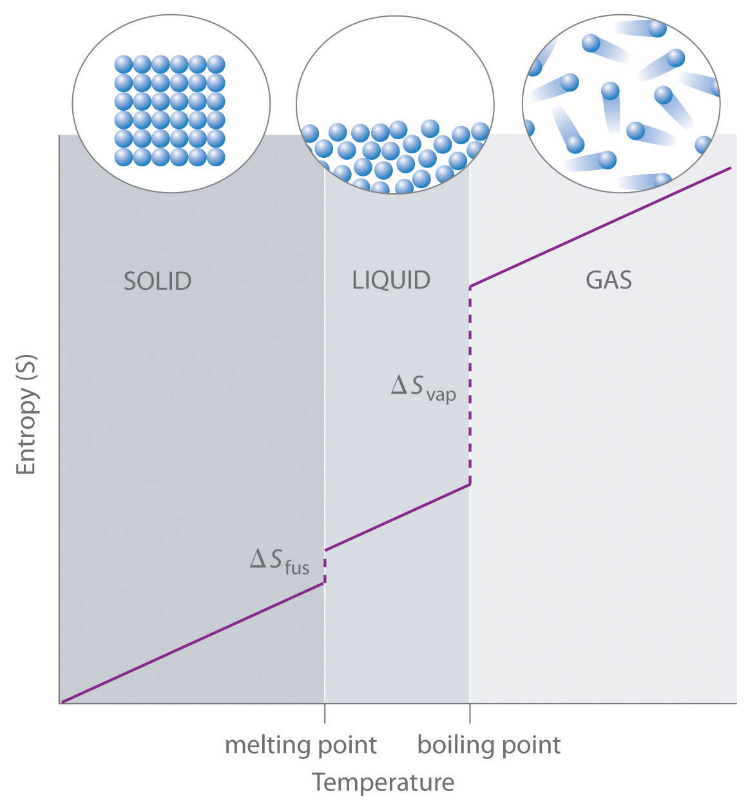
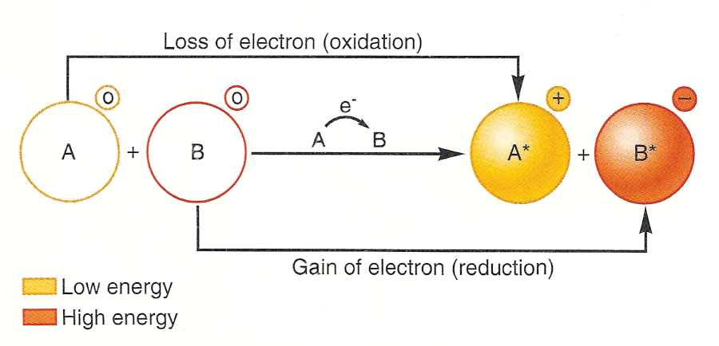
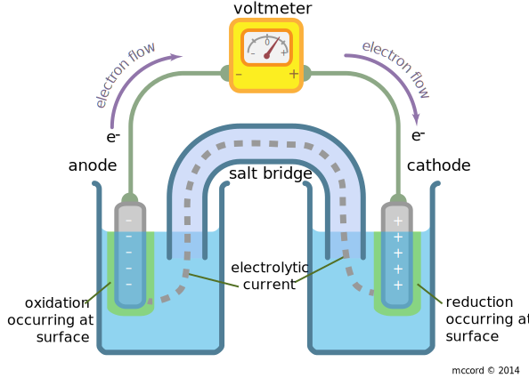

Chapter 19: Chemical Thermodynamics
-

- Spontaneous Processes
- Spontaneous: Proceeds on its own without assistance
- Entropy: randomness of system
- Change in entropy = q rev / T
- Irreversible increases entropy
- Reversible doesn’t change entropy
Chapter 20: Electrochemistry
- Redox reaction: oxidation and reduction must occur
- Oxidant/Oxidizing Agent: Substance that makes oxidization possible
- Reductant/Reducing Agent: Substance that makes reduction possible
- Balancing Redox Reactions
- Conservation of mass / Balance of electron gain and loss
- Half Reaction: Reactions that show either oxidation or reduction alone
- Steps to balance
- Divide to oxidation and reduction half reactions
- Balance each half reaction 
- Balance elements other than H and O
- Balance O atoms by adding H2O
- Balance H by adding H+
- Balance charges by adding e-
- Multiply half reactions to use Hess’s law
- Check atoms and charge are balanced
- Balancing in Basic Solutions
- Balance like acidic
- Add OH- to cancel out with H+ to form water on both sides
- Cell Potentials
- Concept: Like water in a waterfall, it flows spontaneously over since a difference in potential energy, likewise, potential energy of electrons is higher in anode than in cathode
- Difference is measured in potential energy per electrical charge
- 1 V = 1 J / C
- 1 electron = 1.60 x 10^-19 C
- Cell potential: Potential difference between two electrodes of a voltaic cell
- Also called electromotive, force, emf, and voltage
- Standard cell potential: Cell Potential under standard conditions
- Standard Reduction Potentials
- Standard Cell Potential: Standard reduction potential of the cathode reaction, Ered cathode + Eox anode
- SHE (standard hydrogen electrode): produces H+ to H2 reaction
- Cathode = reduction, Anode = oxidation
- Higher Ered = higher tendency for reaction to occur
- Strengths of Oxidizing and Reducing Agents
- More easily reduced = better oxidizing agent
- More easily oxidized = better reducing agent
- Free Energy and Redox Reactions
- Positive E: Spontaneous
- Negative E: Non-spontaneous
- Delta G = -nFE
- F = 96485 C / mol = 96485 J / V - mol
- Voltaic (Galvanic) Cells
- Device in which transfer of electrons take places through an external pathway
- Electrons flow through a wire to constitute an electrical current
- Electrodes: Two solid metals connected by external circuit
- Anode: oxidation occurs (-)
- Cathode: reduction occurs (+)
- Half-cell: each compartment of voltaic cell (ox/red)
- Solutions in two half-cells must remain electrically neutral
- Ions must migrate through solution form one half-cell to the other
- Salt bridge: U-shaped tube containing electrolyte solution such as NaNO3 (aq), whose ions will not react with other ions in cell
- Cations from salt bridge migrate to cathode
- Anions from salt bridge migrate to anode
- Nernst Equation
- Delta G = Delta G Standard + RT(lnQ)
- E = E standard - RT(lnQ)/nF
- Concentration Cells
- Cell based solely on emf generated due to a difference in concentration
- Ex. Ni → Ni2+ (anode), Ni2+ → Ni (cathode)
- Standard emf = zero
- Different concentrations
- Operates until Ni2+ anode = Ni2+ cathode
- At this point, Q = 1, so E = 0
- Use Nernst equation (Q = [dilute] / [concentrated])
- More dilute = anode
- More concentrated = cathode
- Electrolysis
- Voltaic cells are based on spontaneous redox reactions, while electrolysis is non-spontaneous redox reactions driven by outside electrical energy
-

- Electrolytic cell: consists of two electrodes immersed in either molten salt or in solution
- Battery acts as electron pump
- Reduction occurs at cathode, oxidation occurs at anode
- Ex. Molten NaCl: Na+ reduced Cl- oxidized
- Positive terminal connected to anode
- Negative terminal connected to cathode
- Electron moves from anode to cathode
- Must electrolyze aqueous solutions otherwise, water might be oxidized and reduced
- Electrodes are inert: do not react, but serve as surfaces for oxidation and reduction to occur
- Electroplating: Using electrolysis to deposit a thin layer of one metal on another metal
- Object is cathode
- Anode is what is transferred
- Coulombs = amperes (current) x seconds
- 1 Faraday = 96485 Coulombs / 1 mole of electrons
- Batteries and Fuel Cells
- Battery: portable self contained electrochemical power source that consists of one or more voltaic cells
- Greater voltages can be achieved with more cells
- Primary cells: Cannot be recharged and must be discarded when voltage drops to zero
- Secondary cell: Can be recharged from an external power source after voltage has dropped
- Lead-Acid Battery
- 12 V lead-acid battery: 6 voltaic cells in series, each producing 2 V
- Cathode is lead dioxide, anode is lead, both immersed in sulfuric acid
- Main advantage: Can be recharged, reverse electrolysis
- Alkaline Battery
- Non-rechargeable battery
- Anode: Zinc metal in gel with a solution of KOH
- Cathode: MnO2 and graphite
- Nickel-Cadmium, Nickel-Metal-Hydride, Lithium-Ion Batteries
- Nickel-Cadmium
- Lightweight rechargeable batteries
- Most common is nickel-cadmium
- Cadmium oxidized
- Nickel oxyhydroxide is reduced
- Nickel-Metal-Hydride
- Similar to Nickel-Cadmium but anode is charged to metal alloy
- Lithium-Ion
- Allows for greater energy density since lithium is light, Li+ ions are inserted into layered solids such as graphite
- Hydrogen Fuel Cells
- Thermal energy released by burning fuels is less efficient
- 60% is lost as heat
- Fuel Cells
- Voltaic cells that directly produce electricity
- Fuel must be continuously supplied to generate electricity
- Most common is H2 and O2.
- H2 as fuel and O2 as oxidant
- Hydrogen PEM cell: proton-exchange membrane
- In cars, fuel cells are arranged into a fuel cell stack
- Corrosion
- Oxidation of metals in spontaneous environments
- Rusting of Iron
- Iron oxidized
- Oxygen reduced
- Reduction of O2 requires H+, so increasing pH makes O2 reduction less favorable
- Fe2+ is oxidized to Fe3+ which forms Fe(3) oxide, rust
- Cathodic Protection: Protecting a metal from corrosion by making it the cathode in an electrochemical cell
- Metal that is oxidized is called sacrificial anode
- Magnesium and Zinc
Chapter 21: Nuclear Chemistry
- Terminology
- Nucleons: Protons or Neutrons
- Nuclide: Nucleus containing specified number of protons
- Radionuclides: Radioactive nuclides
- Radioisotopes: Atoms containing radionuclides
- Alpha Decay
- Alpha particles: Helium-4 particles
- Alpha radiation: Stream of alpha particles
- Beta Decay
- Emits an electron -1 e, 0 mass
- Neutron turns into proton and electron
- Beta radiation: Stream of beta particles
- Gamma Radiation
- Emits high energy photons
- Doesn’t change atomic mass o V
- Positron Emission
- Same mass as electron but opposite charge
- Emits 1 e
- Converts proton to neutron
- Electron Capture
- Capture by nucleus of electron
- Converts proton to neutron
- Patterns of Nuclear Stability
- Neutrons use nuclear force to attract
- More neutrons needed as number of protons increase due to repulsion
- All nuclei with 84 or more protons are radioactive
- Belt of Stability: Band in proton to neutron graph showing stability of atoms
- High neutron to proton ratio (Above belt of stability)
- Beta decay: Decreases number of neutrons, increase protons
- Low neutron to proton ratio (Below belt of stability)
- Positron emission: Increase neutron decrease protons
- More common among lighter nuclei
- Electron capture: Increase neutron decrease protons
- More common as nuclear charge increases
- Nuclei with atomic number >= 84
- Alpha decay: Moves diagonally toward belt of stability
- Radioactive Series
- Nuclear disintegration series: Series of nuclear reactions that begins with unstable nucleus and results in stable nucleus
- Magic numbers (2, 8, 20, 28, 50, 82, 126): Nuclei with these numbers of protons or neutrons are more stable
- Nuclei with even numbers of protons and neutrons are more likely to be stable
- Nuclear Transmutations
- Nuclear reactions induced by being struck by a neutron
- Listing format for transmutations
- N(a, p)O
- N: Target nucleus, a: bombarding particle, p: ejected particle, O: product nucleus
- Particle Accelerator
- Charged particles are manipulated through magnetic fields in a vacuum
- Transuranium Elements:
- Half life
- Radiometric Dating
- Detection of Radiation
AP Chem
AP Chemistry study guide created by Jeffrey Chou.
Based off of Mr. Leung's curriculum and the Baron's AP Chemistry resource.